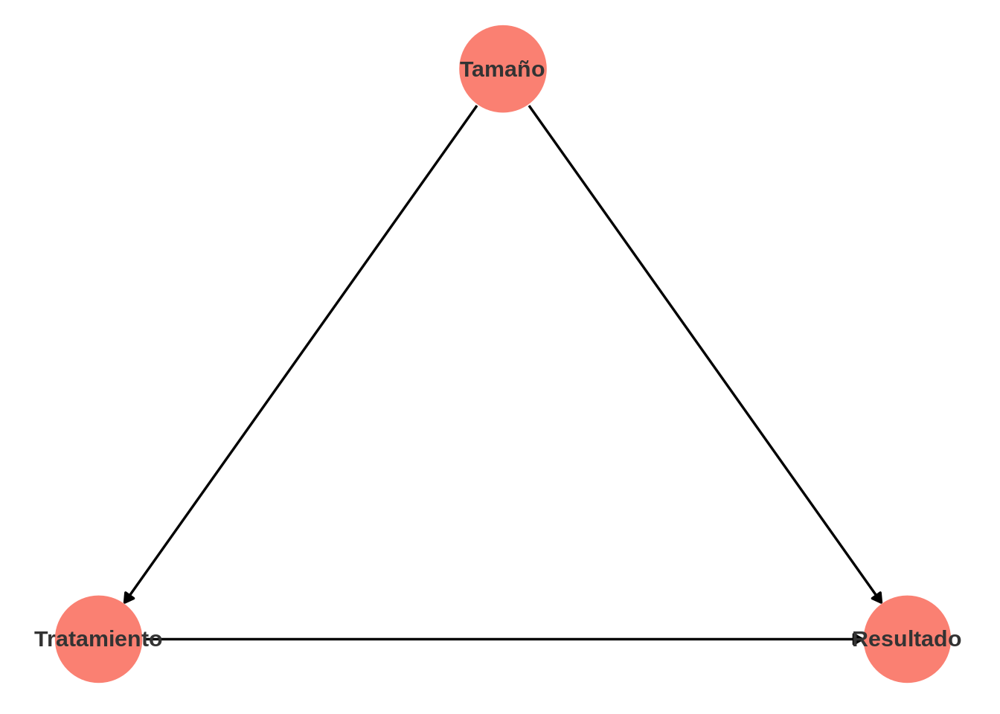
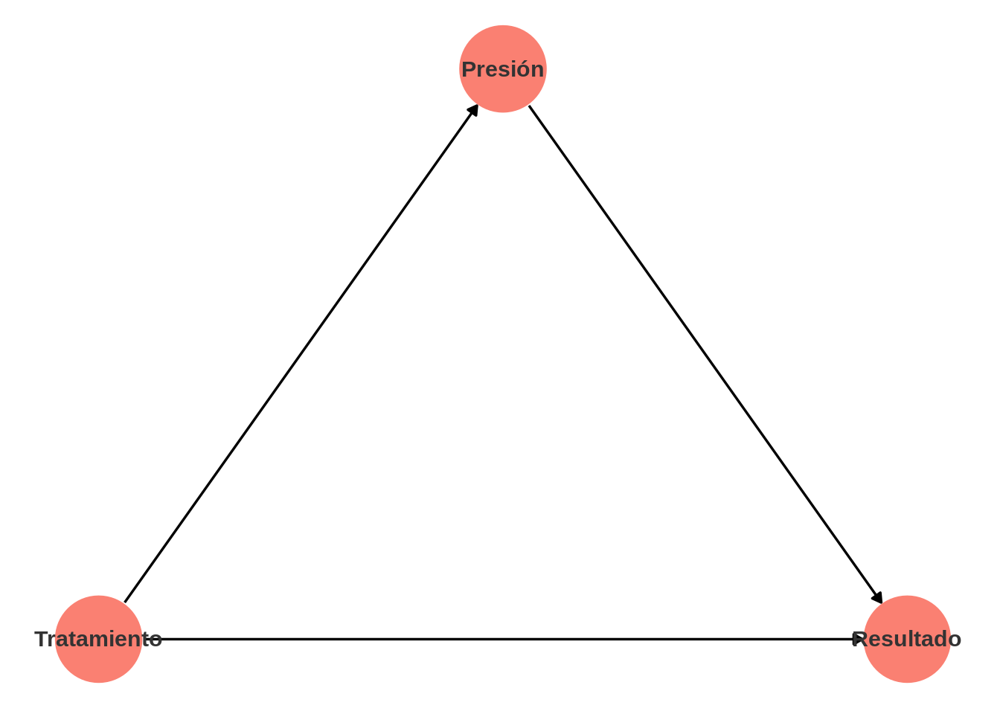
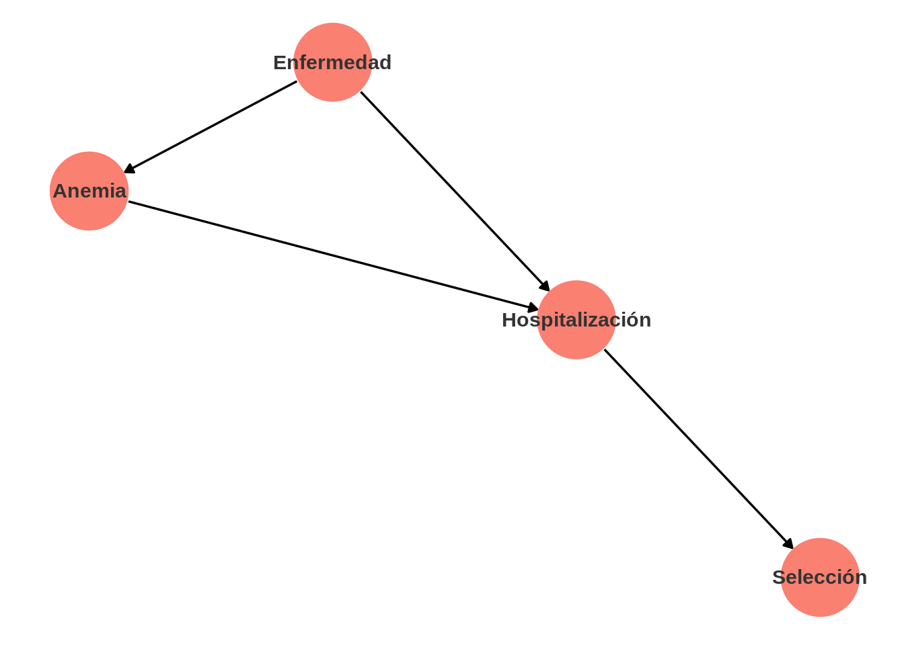
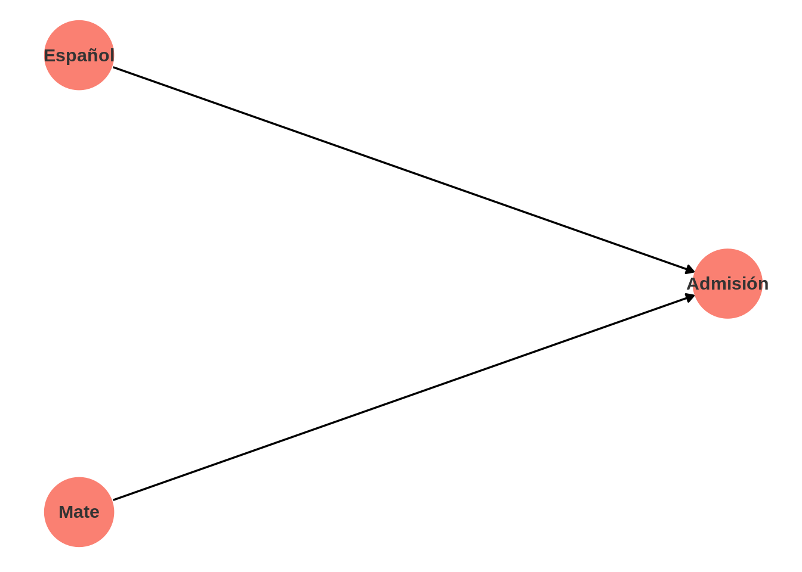
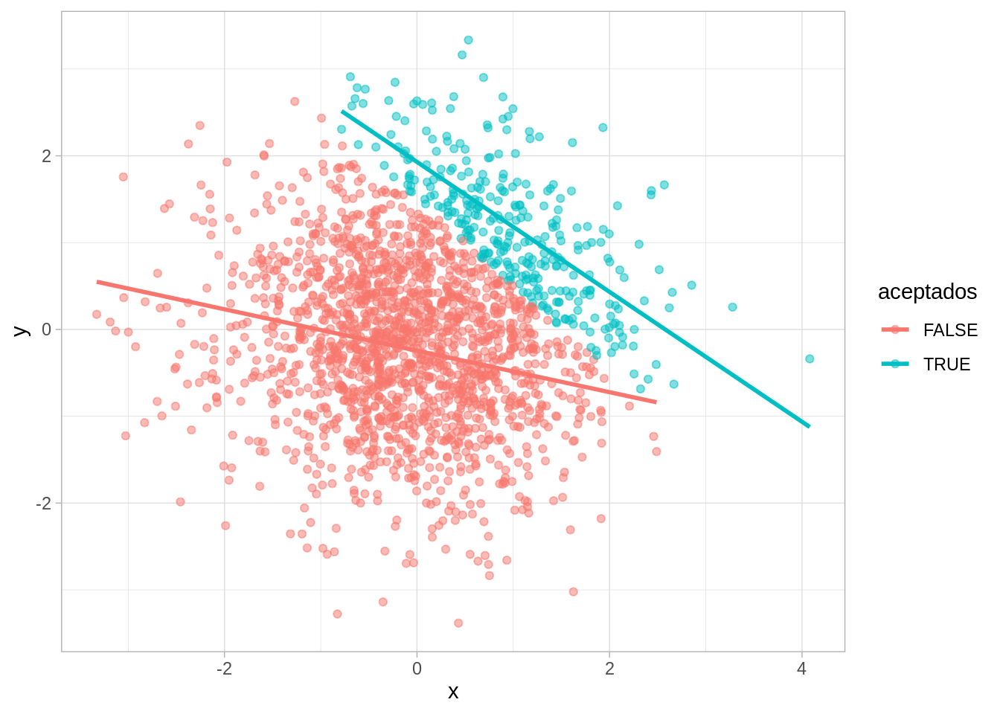
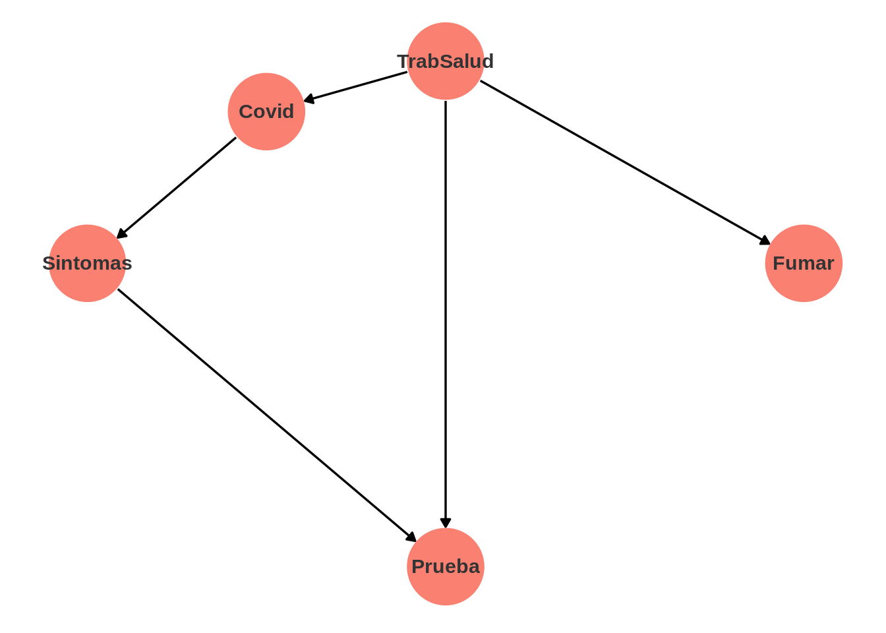

Código
library(tidyverse)
library(lubridate)
library(kableExtra)
ggplot2::theme_set(ggplot2::theme_light())library(tidyverse)
library(lubridate)
library(kableExtra)
ggplot2::theme_set(ggplot2::theme_light())Podemos utilizar diagramas causales introducidos por Judea Pearl (Pearl, Glymour, y Jewell (2016)) para explicar por qué el análisis se hace de manera diferente en cada uno de los casos de arriba. Los diagramas causales son representaciones de nuestro conocimiento de dominio acerca de cómo se relacionan de manera causal las variables de interés. En el caso de cálculos renales, podemos escribir el diagrama como sigue:
library(dagitty)
library(ggdag)
dag_1 <- dagitty('dag{"Tratamiento" [exposure,pos="-3,0"]
"Resultado" [outcome,pos="3,0"]
"Tamaño" [pos="0,1"]
"Tamaño" -> "Tratamiento"
"Tamaño" -> "Resultado"
"Tratamiento" -> "Resultado"
}')
dag_1_tidy <- tidy_dagitty(dag_1)
dag_1_tidy |>
ggplot(aes(x = x, y = y, xend = xend, yend = yend )) +
geom_dag_edges() +
geom_dag_point(colour = "salmon", size = 20) +
geom_dag_text(colour = "gray20") +
theme_dag() 
Sin embargo, en el segundo ejemplo tenemos:
library(dagitty)
library(ggdag)
dag_1 <- dagitty('dag{"Tratamiento" [exposure,pos="-3,0"]
"Resultado" [outcome,pos="3,0"]
"Presión" [pos="0,1"]
"Tratamiento" -> "Presión"
"Presión" -> "Resultado"
"Tratamiento" -> "Resultado"
}')
dag_1_tidy <- tidy_dagitty(dag_1)
dag_1_tidy |>
ggplot(aes(x = x, y = y, xend = xend, yend = yend )) +
geom_dag_edges() +
geom_dag_point(colour = "salmon", size = 20) +
geom_dag_text(colour = "gray20") +
theme_dag()
Adicionalmente, en ambos ejemplos, estamos suponiendo que no existen otras variables confusoras que puedan afectar nuestro análisis. Qué tan correcta es esa suposición depende de que conozcamos los detalles de cómo fueron recopilados estos datos.
En un estudio de hospitales en Australia se registró que 57% de una muestra pacientes tenían anemia cuando fueron ingresados. ¿Qué podemos decir acerca de la prevalencia de anemia en la población general de Australia? Con información básica acerca del proceso generador de esta muestra podemos concluir que será difícil generalizar con estos datos a la población general. La razón es que:
dag_1 <- dagitty('dag{"Selección" [exposure, pos = "2,1"]
"Anemia" [outcome, pos = "-1, 2.5"]
"Hospitalización" [pos="1,2"]
"Enfermedad" [pos="0, 3"]
"Hospitalización" -> "Selección"
"Enfermedad" -> "Anemia"
"Anemia" -> "Hospitalización"
"Enfermedad" -> "Hospitalización"
}')
dag_1_tidy <- tidy_dagitty(dag_1)
dag_1_tidy |>
ggplot(aes(x = x, y = y, xend = xend, yend = yend )) +
geom_dag_edges() +
geom_dag_point(colour = "salmon", size = 20) +
geom_dag_text(colour = "gray20") +
theme_dag()
Este diagrama indica que puede ser difícil generalizar con las personas que han sido seleccionadas, porque tanto la selección como la variable de interés tienen una causa común: la existencia o no de una enfermedad en la persona. Será difícil generalizar para las personas no observadas en el estudio.
En los ejemplos anteriores vimos dos estructuras causales importantes para entender cómo interpretar datos: vimos variables confusoras que afectan a tratamiento y resultado (como el ejemplo de anemia), y vimos cadenas (como en el ejemplo de presión alta).
Una tercera estructura importante es la de colisionador: una variable que tiene como causa tratamiento y resultado. La interpretación de los datos cambia dependiendo si están condicionados a un valor del colisionador o no. Por ejemplo:
¿Por qué tenemos que tener cuidado al interpretar esta correlación? ¿Existe esta correlación en la población general?
library(dagitty)
library(ggdag)
dag_1 <- dagitty('dag{"Español" [exposure,pos="1,1"]
"Mate" [outcome,pos="1,-1"]
"Admisión" [pos="2,0"]
"Español" -> "Admisión"
"Mate" -> "Admisión"
}')
dag_1_tidy <- tidy_dagitty(dag_1)
dag_1_tidy |>
ggplot(aes(x = x, y = y, xend = xend, yend = yend )) +
geom_dag_edges() +
geom_dag_point(colour = "salmon", size = 20) +
geom_dag_text(colour = "gray20") +
theme_dag()
Ahora observamos que aunque en la población general no hay tal relación, al seleccionar sólo a los alumnos de la universidad “activamos” una correlación debido al proceso de selección:
set.seed(823)
tibble(x = rnorm(2000), y = rnorm(2000)) |>
mutate(aceptados = x + y > 1.5 ) |>
ggplot(aes(x, y, colour = aceptados)) +
geom_point(alpha = 0.5) +
geom_smooth(method = "lm", se = FALSE)`geom_smooth()` using formula 'y ~ x'
Algunos estudios fueron publicados en la primera mitad de 2020 que notaban que el porcentaje fumadores entre los casos positivos de COVID era menor que en la población general, y se hicieron algunas interpretaciones acerca de este hecho. Estos estudios se hicieron con personas que se hicieron una prueba.
En este ejemplo replicaremos cómo es que podemos encontrar esta asociación en este tipo de estudios aún cuando no exista tal asociación en la población general (ver este artículo). Usaremos datos sintéticos (simulados).
Primero vamos a razonar acerca del proceso generador de datos y a hacer algunos supuestos:
Podemos resumir cualitativamente con el siguiente diagrama:
library(dagitty)
library(ggdag)
dag_1 <- dagitty('dag{"Covid" [outcome, pos = "-0.5, 2.5"]
"Prueba" [pos="0,-2"]
"TrabSalud" [pos="0, 3"]
"Sintomas" [pos="-1, 1"]
"Fumar" [pos = "1, 1"]
"TrabSalud" -> "Covid"
"TrabSalud" -> "Prueba"
"TrabSalud" -> "Fumar"
"Covid" -> "Sintomas"
"Sintomas" -> "Prueba"
}')
dag_1_tidy <- tidy_dagitty(dag_1)
dag_1_tidy |>
ggplot(aes(x = x, y = y, xend = xend, yend = yend )) +
geom_dag_edges() +
geom_dag_point(colour = "salmon", size = 20) +
geom_dag_text(colour = "gray20") +
theme_dag()
El código para simular es el siguiente: todas las variables toman valores 0 o 1, pero con diferentes probabilidades y dependiendo de las variables que son padres en la gráfica de arriba.
set.seed(821)
#simular población
n <- 1000000
trab_salud <- rbinom(n, 1, 0.01)
covid <- rbinom(n, 1, ifelse(trab_salud==1, 0.04, 0.01))
datos <- tibble(trab_salud = trab_salud, covid) |>
mutate(sintomas = rbernoulli(n, ifelse(covid == 1, 0.5, 0.01))) |>
mutate(prueba = rbernoulli(n, ifelse(trab_salud ==1, 0.99, 0.6 * sintomas + 0.01))) |>
mutate(fumar = rbernoulli(n, ifelse(trab_salud == 1, 0.3, 0.1))) |>
mutate(covid = ifelse(covid ==1, "positivo", "negativo")) |>
mutate(fumar = ifelse(fumar, "fuma", "no_fuma"))Suponemos ahora que tomamos como muestra a todas aquellas personas que se hicieron una prueba. En primer lugar, la proporción de fumadores en la muestra es un poco más alta que la población, porque los trabajadores de salud están sobrerrepresentados
datos_pruebas <- filter(datos, prueba == 1)
table(datos_pruebas$fumar) |> prop.table()
fuma no_fuma
0.1712317 0.8287683 Y ahora vemos que están asociados fumar y salir positivo:
table(datos_pruebas$covid, datos_pruebas$fumar) |> prop.table(margin = 2) |>
round(2)
fuma no_fuma
negativo 0.91 0.87
positivo 0.09 0.13En la población no existe tal asociación, además de que la tasa de positivos es considerablemente más baja:
table(datos$covid, datos$fumar) |> prop.table(margin = 2) |>
round(3)
fuma no_fuma
negativo 0.989 0.990
positivo 0.011 0.010